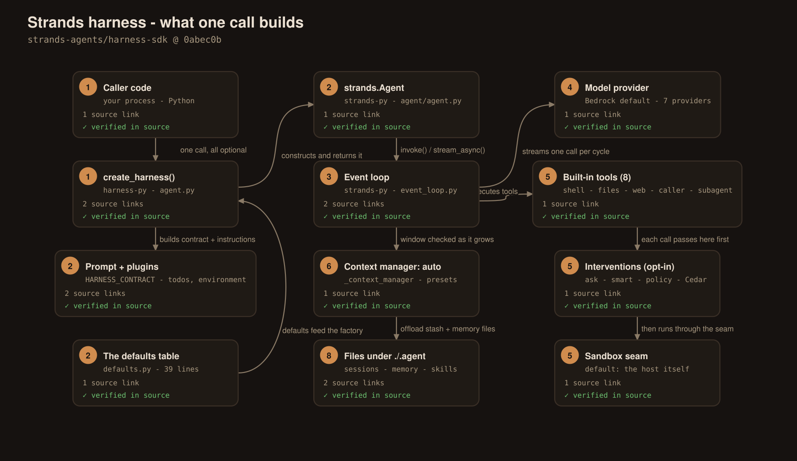
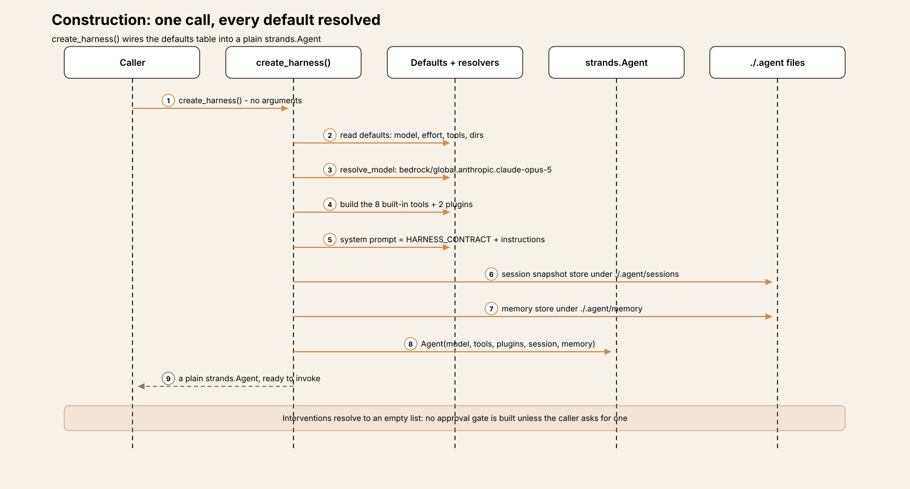
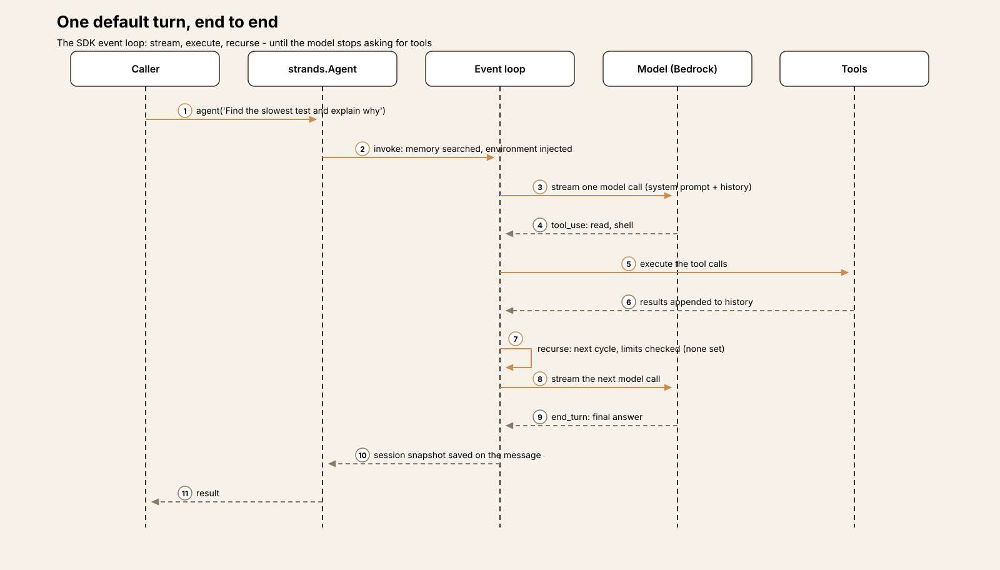
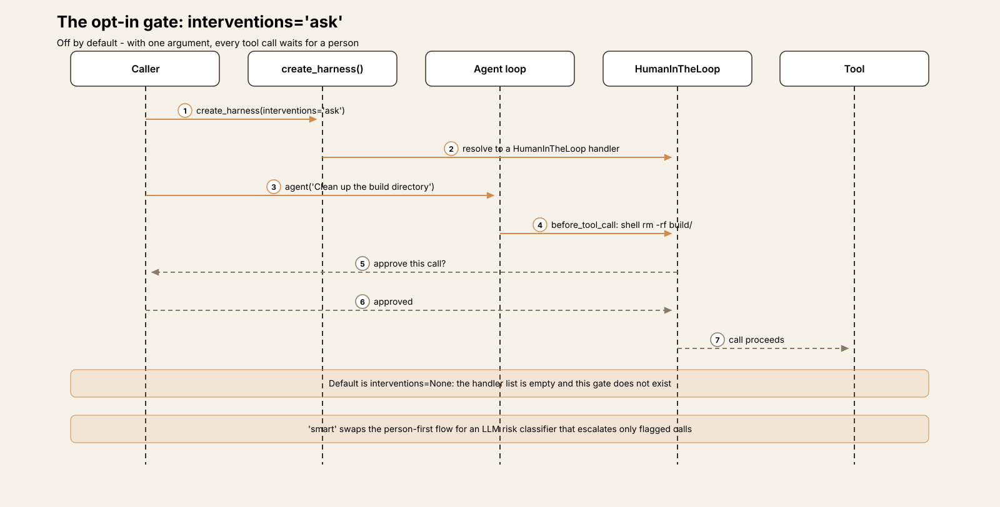
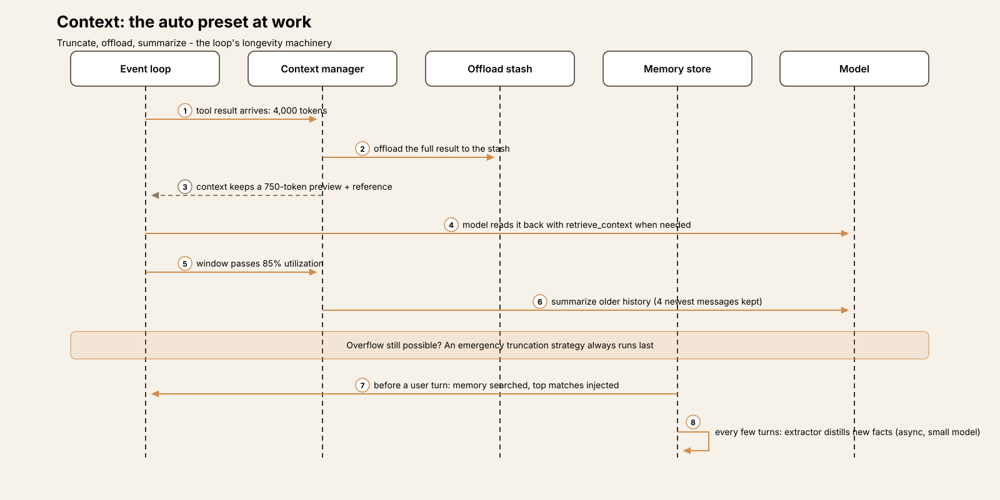
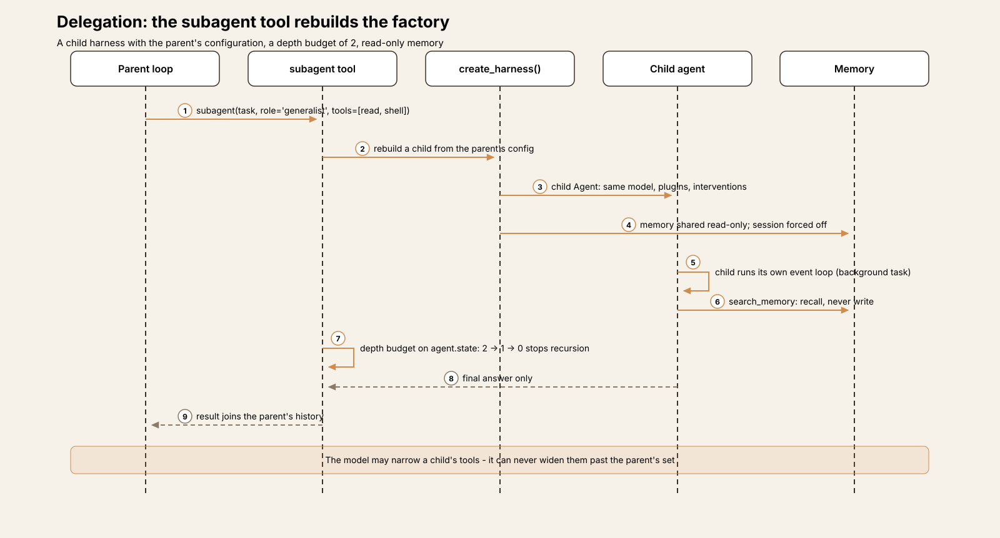

Agent Harness Anatomy #27: Strands harness — the agent one call builds
Series: Agent Harness Anatomy — top-down dissections of real agent harnesses, grounded in verifiable source code. Every behavioral claim below carries a footnote to a pinned GitHub permalink; the full evidence lives in the endnotes.
Version block
- Repo: strands-agents/harness-sdk
- Pinned: tag
harness-python/v0.3.2, commit0abec0bca2ce86d3a3d2147b0dfffbc008654ae6(2026-10-22) — the newest release tag for the harness package, whose version is derived from git tags in its ownpyproject.toml. This monorepo carries several tag trains; the numerically largest,v1.41.0, is a Python SDK tag from May 2026, months before the harness existed, and was rejected as the pin for that reason. - Language: Python (with TypeScript twins) — 3,382 tracked files; the core read for this teardown is
harness-py/(the Python harness, 4,669 lines) plus the parts ofstrands-py/(the Python SDK) the harness composes: the event loop, the context manager, the vended shell, the sandbox seam, the interventions and the session/memory machinery. - License: Apache-2.0[1]
- Claim under test: "A single
create_harness()call gives you an optimized agent with benchmarked defaults for the model, tools, memory, sessions, and context management."[2] The defaults are verified below, one by one, from the code; the benchmark results and the word "optimized" are vendor claims about evaluations, not properties of this tree, and are reported as such.
Two framing notes. First, this teardown was read-only: the source was cloned and read, never built or executed. Second, a lineage note, because it defines what there is to describe: this repository is the Strands Agents SDK codebase, continued — the SDK packages live here as strands-py/ and strands-ts/, and the harness packages were added beside them in September 2026 as a layer on top. The harness package's own guide describes it as "a thin composition layer over the strands-agents SDK" that "wires a resolved model, the vended system prompt, built-in tools, context management, and optional session persistence into a plain strands.Agent".[3] Thin in code, as it turns out — and thick in defaults. The opinion is the product, so this teardown reads the defaults the way other teardowns read a loop.

The mental model
Hold three ideas apart, because most of Strands harness follows from them.
The harness is a factory, not a framework. create_harness() is a function that resolves a table of defaults and constructs a plain strands.Agent — the SDK's own class, unmodified and unwrapped.[4] What the caller holds afterwards is the SDK object itself, with everything the SDK offers (hooks, streaming, structured output, its own further configuration) still available. The harness's contribution is entirely in what it chose for you before you got the object.
The defaults are the design. One small file, defaults.py, names nearly all of them: a Bedrock-first default model, eight built-in tools, two feature plugins, a context-management preset, snapshot sessions, file memory, prompt caching.[5] Reading a Strands harness means reading that table and the resolvers that interpret it — there is no separate application whose behavior needs reconstructing.
Safety is a parameter, not a default. The factory's one security-shaped option, interventions, defaults to None — which resolves to an empty handler list, so every tool call runs — and the SDK's default sandbox is the host process's own environment, with no isolation.[6][7] The harness is candid about both in its own docstrings, but they are the two facts a caller most needs to know: the one-call agent is capable first and gated only if you ask.
Component map
- The factory (
harness-py/src/strands_harness/agent.py) —create_harness()and its private resolvers: built-in tool assembly, web-search mode selection, skills and plugin selection, tool-name collision checking, background-task policy, and the finalAgentconstruction. - The defaults and types (
defaults.py,types/agent.py,options.py,config.py) — the defaults table, the option types (BuiltinToolsConfig,SessionConfig,MemoryConfig,Effort, …), the normalization of the sugar forms into concrete values, and a serializable camelCase config form of the same defaults, shared with the TypeScript package. - The model resolver (
models.py) —provider/namestrings to provider model objects, per-provider reasoning (effort) mapping and validation, prompt-caching configuration, and the small auxiliary model used for summarization and memory extraction. - The prompt (
prompt.py) — the vendedHARNESS_CONTRACTsystem prompt, with the caller'sinstructionsappended after it. - Harness-authored tools (
tools/) —read/write/edit,web_fetch, the Exaweb_searchtool,programmatic_tool_caller, and thesubagentdelegation tool (theshellcomes from the SDK's vended set). - Built-in plugins (
plugins/) —Todos(atodo_writetool plus ephemeral re-surfacing) andEnvironmentContext(per-turn environment and project-doc injection). - The SDK underneath (
strands-py/) — the recursive event loop, the context manager and its presets, the sandbox seam and its implementations, interventions (HumanInTheLoop,CedarAuthorization), snapshot sessions, the memory manager, hooks, MCP, and the provider implementations. The harness composes this layer; it does not reimplement it.
Construction: what the one call resolves
create_harness() takes sixteen named options plus **agent_kwargs, and every one of them is optional.[4] The signature is the quickest honest summary of the product:
model=None→ the default model;effort="auto";instructions=None→ the contract alone.tools=None,plugins=None,mcp_servers=None→ nothing added beyond the built-ins.builtin_tools=None→ the full default set of eight;builtin_plugins=None→todosandenvironment.background_tasks=None→ the SDK background-tasks policy described below;cachingunset →"auto"(on).context_manager="auto";session=True;skills=True;memory=True.interventions=None→ off.- Anything else —
system_prompt,session_manager,memory_manager,sandbox,hooks, any otherAgentkeyword — passes through inagent_kwargs, and an explicit SDK value always beats the harness sugar it corresponds to.[4]
Construction then runs as a fixed pipeline: normalize the tool selection, resolve the session and memory options, decide the web-search mode for the chosen model, resolve the model itself (validating effort against the provider), build the system prompt, load any MCP servers as additional tools, assemble the built-in tools and plugins, build the session and memory managers, run the tool-name collision check across all sources (built-ins, caller tools, plugin-vended tools, memory tools), resolve the background-task policy, and construct the Agent.[4][8] A name collision raises at construction rather than letting one tool silently shadow another — a small, telling choice: the factory would rather fail before the loop starts than misbehave inside it.
Telemetry deserves its own sentence because it is the one side effect: create_harness() first calls setup_telemetry(), which wires an OpenTelemetry exporter only when the OTEL_TRACES_EXPORTER environment variable is set — unset means off, deliberately not honoring the OTEL spec default.[9]

The core loop
The loop the caller gets is the SDK's event loop, and its shape is recursion. One cycle (event_loop_cycle) checks the invocation's limits, streams one model call, and dispatches on the stop reason: tool_use executes the requested tools and recurses into the next cycle with the results appended; end_turn stops; max_tokens raises MaxTokensReachedException with the partial message kept in history, so the caller can continue by invoking again.[10] Streaming is the native form — stream_async() yields the loop's typed events as they happen — and the synchronous agent("...") call is the same loop consumed to completion.
The limits deserve precision, because they are easy to overstate. The SDK has a real Limits type — turns, output_tokens, total_tokens, checked at the top of each cycle, with dedicated stop reasons (limit_turns, limit_total_tokens, limit_output_tokens).[11] But Limits is a per-invocation argument to invoke_async() / stream_async(), and create_harness() sets no default for it. A harness run therefore ends when the model decides to stop, an error interrupts it, the caller cancels it, or context handling can no longer recover the window — not when a budget runs out. A caller who wants a cap can pass one on every invocation; the factory will not remember it for them. The one recursion the factory does bound is delegation: the subagent depth budget, held on agent state, defaults to 2.[12]

The built-in tools
Eight tools are built by _builtin_tools() and registered in a fixed order.[13]
shell— the SDK's vended shell tool, executing commands through the agent's sandbox seam (below).[14]read,write,edit— harness-authored file tools, also routed through the sandbox seam. Paths must be absolute and..traversal is rejected.readreturnscat -n-style numbered lines (a 2,000-line default window) for text, and viewable media for images and binary documents when the resolved model accepts media — the factory asks the model layer whether it does and degradesreadto text descriptions when it does not.editis an exact-string replacement that must match exactly once.[15]web_fetch— fetches a URL and returns a small model's answer about the page rather than the page itself, so raw pages never enter the main context. By default the fetch runs ascurlinside the agent's sandbox, so any sandbox egress rules cover it;transport="direct"opts back into a plain request from the harness process. The summarizer is a small, fast model chosen for the main model's provider, so its credentials align with the agent's.[16]web_search— one name, two mechanisms, and the teardown's most instructive default. Where the provider offers native search (OpenAI, Anthropic, Google, and Mantle's GPT-5/GPT-6 models), the tool is a model flag, not a tool at all. Elsewhere it is off — and on the default model (Bedrock Converse) it is therefore off, quietly, at info log level. Naming it explicitly on an unsupported model raises at construction, and the third option,{"web_search": "exa"}, builds a real tool backed by Exa's hosted search — a third party that receives the queries, with a warning logged to say so.[17] The default harness, exactly as shipped, cannot search the web.programmatic_tool_caller— the model writes Python that orchestrates its other tools (chaining, looping, filtering in one turn instead of one tool call per round trip). The code runs in a Monty sandbox: no filesystem, network or process access exists in the guest; only the agent's tools are reachable, inner calls go through the normal executor (so interventions still apply), and the VM enforces 60 seconds of interpreter time, 256 MiB of memory and a suspension budget, with at most 10 inner calls in flight. Only what the code prints returns to the model.[18]subagent— delegation as a tool, covered in its own section below.
Around the eight sit the plugin- and manager-vended tools: todo_write from the todos plugin, search_memory from the memory manager, and retrieve_context from the context manager. Adding and removing is configuration, not subclassing: a builtin_tools list pins exactly the names given ([] turns them all off), a mapping edits the default set (False removes, True adds, a dict adds and configures; the "*" key picks the starting set).[19] Caller tools arrive via tools= — functions, decorated tools, modules, even another Agent wrapped with Agent.as_tool() — and MCP servers via mcp_servers=, as the standard mcpServers JSON given as a path or a mapping; servers load leniently (one that fails to start yields no tools rather than failing construction, unless it sets continue_on_error: false) and their tools are prefixed <server>_<tool> by default.[20]
The sandbox seam — and what sits in it by default
Every file and shell operation the built-ins perform goes through one seam: agent.sandbox. That is a clean design with a consequential default. The SDK's Agent falls back, when no sandbox is configured, to NotASandboxLocalEnvironment — described in its own docstring as running "on the host with no isolation" — and create_harness() passes no sandbox of its own, so the default harness reads, writes, edits and executes directly on the caller's machine.[7] The SDK does ship real implementations (Docker and SSH sandboxes live beside the local one in strands-py/src/strands/sandbox/), and a caller can pass one through agent_kwargs — at which point the file tools, the shell and even web_fetch's curl all honor it, because they were built against the seam. The isolation story is therefore "available, one argument away, and off in the box" — the same shape as the approval story, and for the same reason: the factory optimizes for the agent working immediately, and treats confinement as the deployer's decision.
Approvals: the gate is a parameter
The factory's approval option is interventions, and its default is None. Resolved, None becomes an empty list of handlers: no human is asked, no policy is evaluated, every tool call the model requests simply runs.[6] The system prompt does tell the model to confirm before hard-to-reverse actions — but that is a prompt instruction to the model, not a mechanism between the model and the tool.
What the caller can switch on is genuinely layered, and worth listing because it is more than a yes/no prompt:
"ask"— the SDK'sHumanInTheLoophandler approves every tool call (over stdio by default, or a caller-supplied callback, or interrupt/resume)."smart"— the same handler with an LLM risk classifier in front: the classifier judges calls and escalates only the ones it flags.- Any other string — treated as a natural-language policy and used as that classifier's prompt, so the rubric is the caller's own.
- A
.cedarpath — aCedarAuthorizationpolicy (with the optionalstrands-agents[cedar]extra), for deterministic policy evaluation. - Handler instances, or a list — a Cedar policy and one human gate can be layered; two handlers of the same kind collide by name and raise.[21]
Two properties complete the picture. A delegate cannot bypass the gate: subagent children inherit the parent's interventions.[22] And inside programmatic_tool_caller, policy interventions still apply to inner calls, while interrupt-based human approval cannot prompt from inside the sandbox and instead surfaces as a catchable error.[18] The machinery, in other words, is well built — it is simply not in the default path.

Context management: the auto preset
If the loop has a longevity mechanism, this is it. The default context_manager="auto" selects the SDK's auto preset, whose constants are concrete enough to quote: a tool result over 1,500 tokens is truncated to a 750-token preview, with the full result offloaded to a stash the model can read back via retrieve_context; when utilization passes 85%, older history is summarized with the 4 most recent messages preserved; and an emergency truncation strategy is always appended as the pipeline's last step, so overflow recovery runs inside the loop rather than ending it.[23] These are the same mechanisms the launch materials credit for the harness's token efficiency — the vendor's benchmark numbers are theirs to support, but the machinery attributed with the effect is verifiably here, with its thresholds in one file.
The alternative preset, "agentic", moves the decisions to the model (injected context tools, an 8,000-token truncation threshold, summarization only on overflow); a caller can also pass a full ContextManagerConfig, an instance, or False to disable context management entirely.[23]
Memory and sessions: persistence on, resumption manual
Two different stores, with two different lifetimes, both on by default and both made of plain files under ./.agent/.
Sessions are snapshots. With session=True the factory builds a SnapshotSessionManager over local file storage in ./.agent/sessions, saving the latest snapshot on every message — under a fresh random id (8 hex characters) minted at construction.[24] That choice splits persistence from resumption: the run is recorded, but the next create_harness() starts a new session unless the caller reads agent.session_id and passes it back as session={"id": ...}. The factory's docstring states this plainly; it is a reasonable default for a library (a silent resume would surprise embedders), and it means "keeps long-term memory across runs, and resumes an earlier conversation when you give it a session ID" — the marketing sentence — is accurate in both halves, including the conditional.
Memory is independent of sessions and survives them. The factory builds a MemoryManager over a file store of markdown under ./.agent/memory, with a deliberate policy: matches are searched and injected before each user turn, the model gets a search_memory tool, and there is no add_memory tool — the model cannot write memory directly. The only write path is extraction: a model extractor distills durable facts every few turns, asynchronously, using the same small provider-matched model as the web_fetch summarizer.[25] Two consequences follow. A delegate shares the parent's stores read-only — it can recall but never promote its subtask's facts into the store. And because extraction is asynchronous and turn-triggered, a short run can end before the first extraction fires; the factory's documentation tells library callers to scope the agent (async with agent:) or call agent.shutdown() at their shutdown boundary to flush what is pending. Persistence, here too, has a manual step at the end.

The two built-in plugins
Todos gives the agent a todo_write tool for multi-step work and re-surfaces the current list before every model call. The re-surfacing is the elegant part: it goes through an ephemeral ContextInjector, so the list augments one call and is never written into durable history — no stale reminders accumulate, and nothing needs removing.[26]
EnvironmentContext injects, before each user turn, the platform, the current date (injected per turn rather than baked into the prompt, specifically so the cached system-prompt prefix stays warm), the working directory, the project's AGENTS.md in full up to 16,000 characters, and links — not contents — to nearby AGENTS.md / README.md files found within two directory levels. Everything is read through the sandbox seam, so the plugin describes the environment the agent actually runs in, including a remote one.[27]
Models: Bedrock-first, provider-portable
resolve_model() accepts a Model or ModelRouter instance (used verbatim; effort and caching then belong to the instance, with warnings if the caller tried to set them through the harness), a "provider/name" string, a bare Bedrock id (no / means Bedrock), or None for the default.[28] Seven provider builders sit behind the strings — bedrock, bedrock-mantle, anthropic, openai, google, ollama, litellm — and an unknown prefix raises with the supported list and a pointer to passing a Model instance instead.[28]
The effort option is a small translation layer: one vocabulary (auto, off, minimal … max) mapped onto each provider's own reasoning fields, validated against that provider's (and, on Bedrock, that model family's) supported levels, so an unsupported combination fails at construction rather than as a downstream request error; auto resolves to each provider's recommended level, high where the provider has one.[28] Prompt caching, default "auto", is configured by the harness where the provider needs it (cache points plus cached tool definitions on Bedrock and Anthropic direct) and is automatic server-side on OpenAI, Gemini, Mantle and LiteLLM; on Ollama it warns and proceeds without. Credentials are never the harness's business: each provider's own SDK chain resolves them (the AWS chain for Bedrock, environment variables for the Ollama host and LiteLLM key/base). The auxiliary models — web_fetch summarizer, memory extractor — are chosen per provider so a side call shares the main model's credentials rather than demanding a second provider's.[29]
Delegation: the factory, recursively
The subagent tool is where the factory's design closes its own loop: children are built by calling create_harness itself with the parent's captured configuration.[22] A child therefore is not a reduced agent — it inherits the parent's model, built-in tools, built-in plugins, skills and interventions, plus the caller's tools, plugins and hooks. Three things are deliberately not inherited whole: its session is forced off (a throwaway delegate never persists session state), its memory is the parent's store shared read-only, and its tool set can be narrowed by the model at call time but never widened past the parent's. The delegation runs as a background task — the factory forces subagent into the background-policy's always list, while the default policy otherwise lets the model choose background execution for any compatible tool ({"agentic": ["*"]}) — and the depth budget (default 2, tracked on agent state) is what eventually stops the recursion.[12][30] For callers who want fixed roles, model tiers or pinned prompts instead of the model's choices, make_subagent builds a fully configured delegation tool to pass in tools= with the built-in dropped.

Extension points
- Your tools —
tools=(functions, decorated tools, modules,Agent.as_tool()specialists); name collisions with any other source raise at construction.[8] - MCP —
mcp_servers=asmcpServersJSON (path or mapping), prefixed per server, lenient on failure.[20] - Skills —
skills=Trueloads./.agent/skillsthrough the SDK'sAgentSkillsplugin when the directory exists and is otherwise a no-op; directories,SKILL.mdfiles, URLs or anAgentSkillsinstance pass through untouched.[31] - Plugins and hooks — caller plugins run alongside (and before) the built-ins;
hooks=and every otherAgentkeyword pass throughagent_kwargs, and hooks are forwarded to subagent children too.[4] - Swappable managers — a
SessionManager,MemoryManagerorContextManagerinstance replaces the corresponding default wholesale; custom memorystoreskeep the harness's injection/tool policy over your backend.[25] - A portable config form —
define_harness_agent_config()andDEFAULT_HARNESS_AGENT_CONFIGexpress the same defaults as a serializable camelCase dict, shared with the TypeScript package and used by the CLI's export path, so a harness configuration can travel as data.[32] - The SDK itself — because the return value is a plain
Agent, everything underneath (structured output, steering, guardrails integrations, multi-agent patterns) remains reachable without the harness's permission.
Observations
- The most important file in the package is 39 lines long.
defaults.pyis where the product's opinions live, and it can be read in one sitting. Several harnesses in this series distribute their defaults across configuration layers, agent definitions and host settings; Strands puts the table of contents of its own opinion in a single module, and the factory is mostly the machinery that honors it. - Defaults that fail loudly vs. defaults that degrade quietly are chosen deliberately. An unknown built-in tool name, an unsupported
effort, a tool-name collision, an explicitweb_searchon a model without one: construction raises. But the defaultweb_searchon the default model degrades to off with an info log, and caching on Ollama degrades to off with a warning. The pattern is consistent — what you asked for by name is enforced; what you merely inherited is negotiable — and it is the kind of consistency that only shows up when someone designed the failure modes as a set. web_fetchis the built-in that best shows the house style. The page is fetched inside the sandbox (so egress policy applies), reduced by a small model on the same provider (so credentials align), and only the answer enters the main context (so the window stays lean). Three separate defaults — seam, auxiliary model, context hygiene — compose into one tool's behavior.- The contract prompt is honest about its own limits. It instructs the model to confirm before irreversible actions in the same product whose enforcement of that instruction is opt-in. Read together, the prompt and
interventionsdescribe a considered position — the prompt shapes judgment, the handler enforces it — but only one of the two is in the box by default, and a reader should know which.
Tradeoffs
- Immediate capability vs. a gated first run. The one-call agent can read, write, execute and fetch on the host with no approval step. That is what makes the quickstart feel like magic, and it places the entire burden of confinement on the caller noticing two defaults (
interventions=None, the host sandbox) and changing them. Harnesses that gate by default pay for it in first-run friction; Strands pays for it here, in how much its safety story depends on the caller reading the docstrings. - Persistence without resumption. Snapshot-by-default sessions and extraction-based memory are both real, and both have a manual final step (pass the id back; flush at shutdown). For a library embedded in someone else's lifecycle that is arguably the only defensible shape — but it means two of the headline features do less, out of the box, than their one-line summaries suggest.
- A thin layer over a large SDK. The harness package is 4,669 lines, and nearly everything it composes — the loop, the context manager, the interventions, the sandboxes — is SDK surface that evolves on the SDK's own train (the pinned tree's SDK dependency is
strands-agents>=1.57.2,<2.0.0).[33] The factory's defaults are pinned by this teardown; the machinery under them moves at SDK speed, and a default's meaning (what theautopreset expands to, for instance) is explicitly documented in the SDK as subject to tuning between releases. - Two languages, one defaults table. The TypeScript harness mirrors the Python one, with shared constants kept byte-identical by convention (the web-fetch model table says so in its comment). Parity that is maintained by discipline rather than by generation is a real ongoing cost, visible right in the source comments.
Comparison matrix row
| # | Dimension | Strands harness (harness-python/v0.3.2 @ 0abec0b) |
|---|---|---|
| 1 | Agent loop | The SDK's recursive event loop, composed (not reimplemented) by the factory: one streamed model call per cycle, tool calls executed, recurse on tool_use, stop on end_turn; max_tokens raises with history kept. No default cap — the SDK's Limits (turns / output_tokens / total_tokens) are per-invocation and opt-in; the only factory-set bound is subagent depth (2) |
| 2 | Tool system | Eight built-ins (shell, read, write, edit, web_fetch, web_search, programmatic_tool_caller, subagent) plus plugin/manager tools (todo_write, search_memory, retrieve_context); list pins or mapping edits the set; caller tools and MCP servers (mcpServers JSON, per-server prefix, lenient load) join by name with collisions raising at construction; all file/shell work routes through the sandbox seam |
| 3 | Model providers | Bedrock-first (default bedrock/global.anthropic.claude-opus-5); seven string providers (bedrock, bedrock-mantle, anthropic, openai, google, ollama, litellm) or a Model/ModelRouter instance verbatim; one effort vocabulary validated and mapped per provider/family; prompt caching on by default (configured for Bedrock/Anthropic, server-side elsewhere); credentials via each provider's own chain |
| 4 | Prompt construction | The vended HARNESS_CONTRACT behavioral contract + caller's instructions; per-turn ephemeral injections on top: environment context (platform, date, cwd, project AGENTS.md) before each user turn, the todo list before each model call, and memory matches before each user turn — injections never enter durable history |
| 5 | Memory/session | Snapshot sessions to ./.agent/sessions under a fresh random id per construction (save_latest_on="message"); resumption is manual (pass the id back). Memory is separate and survives sessions: markdown files under ./.agent/memory, searched and injected per user turn, written only by an async model extractor every few turns (no add_memory tool); delegates share it read-only; shutdown flush is the caller's step |
| 6 | Reasoning/planning | Reasoning is the model's, with effort mapped per provider; planning support is the todos plugin (a todo_write list re-surfaced every turn). Decomposition is delegation: the subagent tool rebuilds a child through the same factory (depth budget 2, tools narrowable never widenable, always backgrounded) |
| 7 | Extensibility | tools=, plugins=, mcp_servers=, skills= (dir/SKILL.md/URL/instance), custom memory stores or whole manager swaps, hooks= and any other Agent keyword via **agent_kwargs (explicit always wins), make_subagent for configured delegation, and a serializable camelCase config form shared with TypeScript |
| 8 | Interfaces | A library, Python (and a TypeScript twin): the returned strands.Agent is invoked synchronously, asynchronously, or streamed (stream_async yields the loop's typed events); a separate strands CLI in the same monorepo prototypes with the same harness. No hosted control plane; OTEL tracing wires only when OTEL_TRACES_EXPORTER is set |
| 9 | Failure handling | Construction fails loudly on unknown tool/provider names, unsupported effort, caching on an incapable provider when explicit, and tool-name collisions; MCP servers fail soft (no tools) unless marked fatal; model throttling retries inside the loop; context overflow is recovered in-loop (offload, summarize, emergency truncate); max_tokens raises with the partial message preserved for continuation |
| 10 | Security model | Off by default, layered when asked: interventions=None → no handler, every call runs; opt-ins are "ask" (approve every call), "smart" (LLM risk classifier escalates), a natural-language policy as the classifier's rubric, or a Cedar policy file — inherited by delegates. The default sandbox is the host itself (NotASandboxLocalEnvironment, no isolation); Docker/SSH sandboxes exist in the SDK but must be passed in. File tools require absolute paths and reject ..; programmatic_tool_caller's Monty guest has no filesystem/network/process access; Exa web search is opt-in with a logged third-party warning |
LICENSE.APACHE#L1— the repo rootLICENSE.APACHEis the Apache License 2.0 text;harness-py/LICENSEis byte-identical to it, andharness-py/pyproject.toml#L11declareslicense = { text = "Apache-2.0" }. ↩README.md#L74— the README's Quick Start: "A singlecreate_harness()(Python) orcreateHarness()(TypeScript) call gives you an optimized agent with benchmarked defaults for the model, tools, memory, sessions, and context management". The monorepo table atREADME.md#L51describesharness-py/as "Python Strands harness: fully assembled agent viacreate_harness()" andstrands-py/as the "Python SDK: agent loop, model providers, tools". ↩harness-py/AGENTS.md#L9— the package's own guide: "strands-harness(import namestrands_harness) is a preconfigured Strands agent in one call. It is a thin composition layer over thestrands-agentsSDK… Every default is overridable and the return value is a regularAgent". ↩harness-py/src/strands_harness/agent.py#L238—create_harness(...): the full signature and docstring ("the return value is a plainstrands.Agent… an explicit SDK value there (session_manager,memory_manager,system_prompt, …) always beats the harness sugar it corresponds to"); theAgentis constructed atagent.py#L526in the same file. ↩harness-py/src/strands_harness/defaults.py#L5—DEFAULT_MODEL = "bedrock/global.anthropic.claude-opus-5"; the same file setsDEFAULT_EFFORT(L7),DEFAULT_CONTEXT_MANAGER(L9),DEFAULT_CACHING(L11), the eightBUILTIN_TOOL_NAMES(L13),BUILTIN_PLUGIN_NAMES = ("todos", "environment")(L28), and the./.agent/sessions/./.agent/memorydirectories (L35/L39). ↩harness-py/src/strands_harness/interventions.py#L83—resolve_interventions(): "None/"off"yield[]"; the preset mapping (ask→HumanInTheLoop,smart→ classifier,.cedar→CedarAuthorization, any other string → a natural-language classifier policy) is in_resolve_onein the same file. ↩strands-py/src/strands/agent/agent.py#L391—self._sandbox: Sandbox = sandbox or NotASandboxLocalEnvironment(); the constructor docstring (same file, ~L359) describes the fallback as a local environment "that runs on the host with no isolation", and thesandboxproperty (~L718) repeats it. ↩harness-py/src/strands_harness/agent.py#L175—_check_name_collisions(...): raises if two tools would register under the same name (names differing only by-/_collide, matching the SDK registry), naming the losing source and the remedy. ↩harness-py/src/strands_harness/telemetry.py#L53—setup_telemetry(): wires OTLP/console exporters only whenOTEL_TRACES_EXPORTERnames them; the module docstring states the harness "does nothing unless it is set… the harness does not honor OTEL's spec default ofotlp". ↩strands-py/src/strands/event_loop/event_loop.py#L190—event_loop_cycle(): limits check, model execution,tool_use→_handle_tool_execution→ recursion viarecurse_event_loop(same file, L428);max_tokensraisesMaxTokensReachedExceptionwith "The partial message has been added to the conversation history." ↩strands-py/src/strands/types/agent.py#L150—class Limits: "Per-invocation budget caps for the agent loop… Each cap, when set, bounds a singleinvoke_async/stream_asynccall only"; fieldsturns,output_tokens,total_tokenswith stop reasonslimit_turns/limit_total_tokens/limit_output_tokens. ↩harness-py/src/strands_harness/defaults.py#L33—DEFAULT_SUBAGENT_MAX_DEPTH = 2; the budget itself is tracked on the child'sagent.stateby the subagent tool (harness-py/src/strands_harness/tools/subagent.py,_DEPTH_STATE_KEY). ↩harness-py/src/strands_harness/agent.py#L79—_builtin_tools(): buildsmake_shell,make_read,write,edit,make_web_fetch, the Exaweb_searchtool,make_programmatic_tool_callerandbuild_default_subagent(create_harness, parent_config, ...)and returns them keyed by tool name. ↩strands-py/src/strands/vended_tools/shell/shell.py#L30—make_shell(...): "a stateless, sandbox-routed shell tool"; with no bound sandbox it reads the agent's sandbox from the tool context at call time. ↩harness-py/src/strands_harness/tools/file_tools.py#L78—make_read(media=True): numbered-line text reads (default limit 2,000 lines) and media returns for images/documents;_validate_path(L31, same file) requires an absolute path and rejects..;write(L153) andedit(L168;old_str"must appear exactly once") are in the same file, all routing throughtool_context.agent.sandbox. ↩harness-py/src/strands_harness/tools/web_fetch.py#L8— the module docstring: "By default the HTTP request runs ascurlinside the agent'ssandbox…transport="direct"opts back into a plain standard-library request from the harness process"; the tool answers a prompt about the page via a small model so "large payloads never reach the main agent's context" (caps: 30 s, 5 MB, 50,000 chars). ↩harness-py/src/strands_harness/agent.py#L108—_web_search_mode(...):"exa"(with the third-party warning log),"native"whensupports_web_search(model), otherwiseNone— an explicit request on an incapable model raises, a default-on one logs at info level that "the web_search tool is disabled". The Exa tool itself isharness-py/src/strands_harness/tools/web_search.py#L24(_EXA_MCP_URL = "https://mcp.exa.ai/mcp"). ↩harness-py/src/strands_harness/tools/programmatic_tool_caller.py#L47—_LIMITS = {"max_duration_secs": 60.0, "max_memory": 256 * 1024 * 1024, "max_suspensions": 1_000}and_MAX_CONCURRENT_TOOL_CALLS = 10(L51); the module docstring states the Monty guest has "no filesystem, environment, network, FFI, or process access", that interventions apply to inner calls, and that interrupt-based human approval inside a direct call raises a catchable error instead of pausing. ↩harness-py/src/strands_harness/options.py#L80—_normalize_builtin_tools(...): a list pins exactly the named set; a mapping edits the defaults, where onlyFalsemeans off (an empty config dict still enables the tool, with defaults). ↩harness-py/src/strands_harness/agent.py#L427— increate_harness:consumer += MCPClient.load_servers(mcp_servers, continue_on_error=True, prefix_with_server_name=True); the docstring adds that a server failing to start "yields no tools rather than failing construction" unless it sets"continue_on_error": false. ↩strands-py/src/strands/vended_interventions/hitl/hitl.py#L87—class HumanInTheLoop(InterventionHandler): the SDK handler theask/smart/policy presets resolve to; the harness-side grammar that maps strings to it isharness-py/src/strands_harness/interventions.py(see [^6]). ↩harness-py/src/strands_harness/tools/subagent.py#L696—build_default_subagent(...): children are rebuilt throughcreate_harnessfrom the parent's config — the parent's config dict (inagent.py) forwards model, tools, plugins, hooks andinterventionswithsessionforced toFalseand memory replaced by the read-only shared form; the tool axes (Fixed/Inherit/Open/Choice) at the top of the same file state that a picked tool set is re-validated so "a child can never gain a capability the parent lacked". ↩strands-py/src/strands/_context_manager/context_manager.py#L31—_AUTO_TRUNCATE_THRESHOLD = 1_500,_AGENTIC_TRUNCATE_THRESHOLD = 8_000,_TRUNCATE_PREVIEW_TOKENS = 750,_AUTO_SUMMARIZE_UTILIZATION = 0.85; the preset docstring (L41) reads ""auto": Proactive truncation of tool results + summarization at 85% utilization", and the constructor always appends anEmergencyTruncateStrategyas the final strategy. ↩harness-py/src/strands_harness/agent.py#L475—SnapshotSessionManager(resolved_id, storage=session_storage, save_latest_on="message"), whereresolved_idis the caller's sanitized id oruuid.uuid4().hex[:8]; thesessiondocstring increate_harnessstates "This does not auto-resume across runs: with noida new run starts a new session." ↩harness-py/src/strands_harness/memory.py#L38—resolve_memory(...): builds theMemoryManagerover the defaultFileMemoryStore(or the caller's stores, wrapped read-only whenwritable=False, the delegate shape); the module docstring records the policy (injection on,search_memoryon, noadd_memorytool), the async turn-triggered extraction on the small model, and the shutdown-flush guidance. ↩harness-py/src/strands_harness/plugins/todos.py#L53—class Todos(Plugin): thetodo_writetool persists the list to agent state and aContextInjectorwith triggereveryTurnre-surfaces it; the module docstring explains the injector choice — the list "augments one model call and never persists", so no stale reminders stack in history. ↩harness-py/src/strands_harness/plugins/environment.py#L43—class EnvironmentContext(Plugin): auserTurnContextInjectorrendering platform, date, working directory, the projectAGENTS.md(capped at 16,000 chars in the same file) and nearby-file links, all read through the agent's sandbox; the module docstring notes the date is injected per turn so it does not "bust the cached system-prompt prefix". ↩harness-py/src/strands_harness/models.py#L311—_PROVIDERS: the seven provider builders (bedrock,bedrock-mantle,anthropic,openai,google,ollama,litellm) with each provider's recommended thinking level, levels, web-search and caching support;resolve_modeland_split_providerin the same file implement the string grammar (a bare id is Bedrock) and the unknown-provider error. ↩harness-py/src/strands_harness/models.py#L66—_WEB_FETCH_MODELS: the small summarizer per provider (Bedrock →global.anthropic.claude-haiku-4-5-20251001-v1:0, etc.), "Keyed by the main agent's provider so the summarizer shares its credentials";resolve_web_fetch_modelin the same file is also what memory extraction reuses. ↩harness-py/src/strands_harness/agent.py#L210—_resolve_background_tasks(...): the default policy is{"agentic": ["*"]}when background tasks are unset/True, and tools in the forced set (thesubagenttool,_ALWAYS_BACKGROUND_TOOL_NAMESin the same file) are moved intoalways. ↩harness-py/src/strands_harness/agent.py#L143—_skills_plugin(...):TrueloadsAgentSkills(skills=[DEFAULT_SKILLS_DIR])only if./.agent/skillsexists ("otherwise a no-op" per theskillsdocstring); sources and instances pass through untouched. ↩harness-py/src/strands_harness/config.py#L40—DEFAULT_HARNESS_AGENT_CONFIG: the defaults as a serializable dict ("model": defaults.DEFAULT_MODEL,"builtinTools": …,"interventions": None,"sandbox": None, …); the module docstring calls it "Serializable harness configuration shared with TypeScript and exported projects." ↩harness-py/pyproject.toml#L33— the harness's dependency on the SDK:"strands-agents[otel]>=1.57.2,<2.0.0"; the same file (L7) derives the package version from git tags (dynamic = ["version"]). ↩